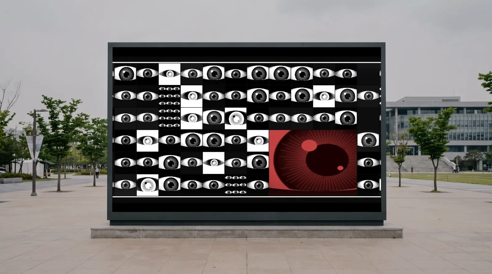
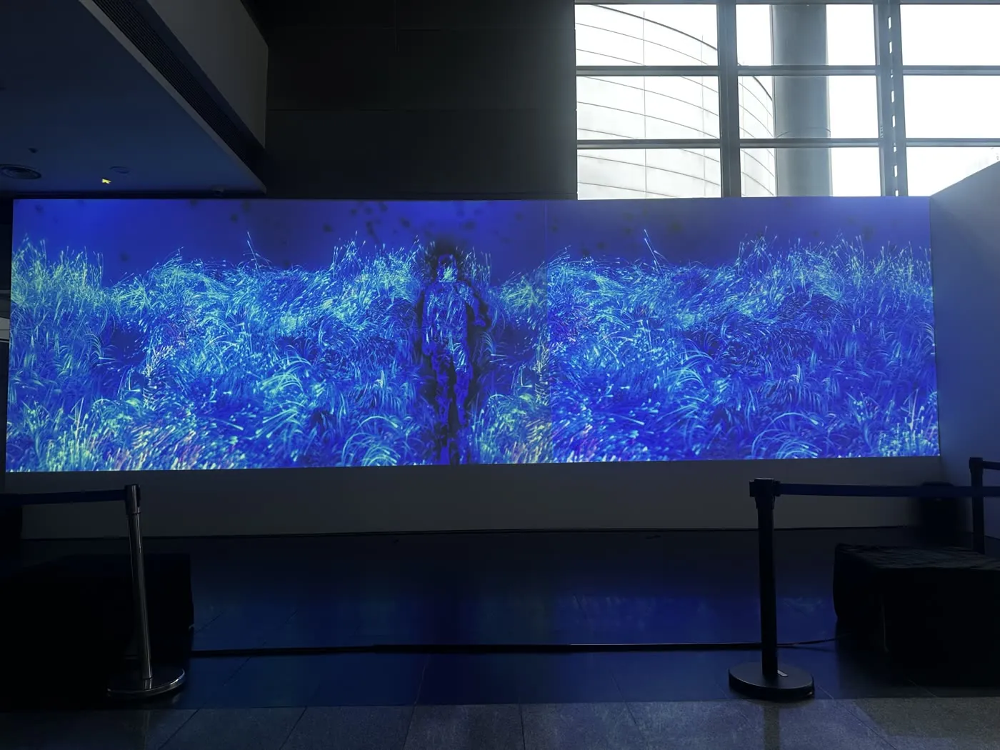
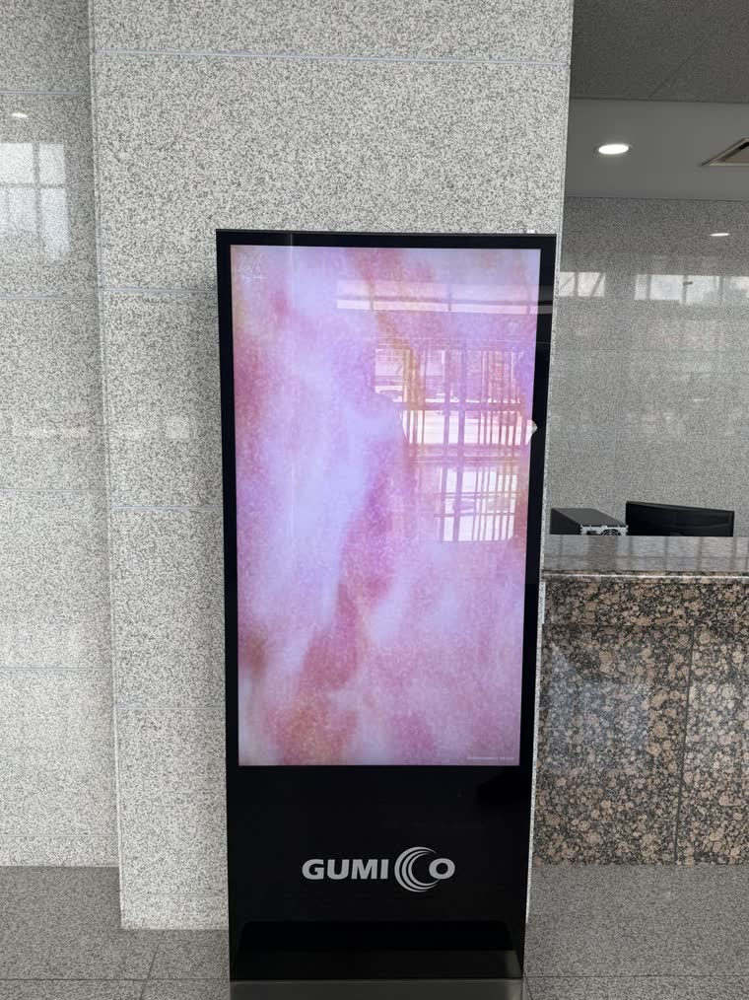
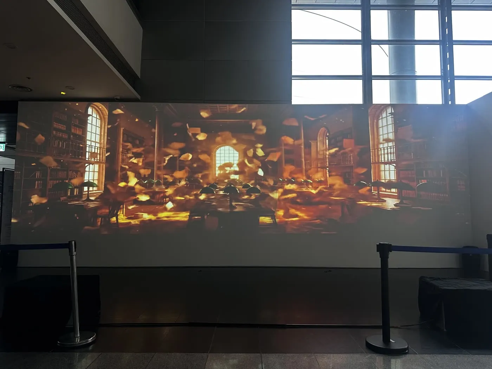
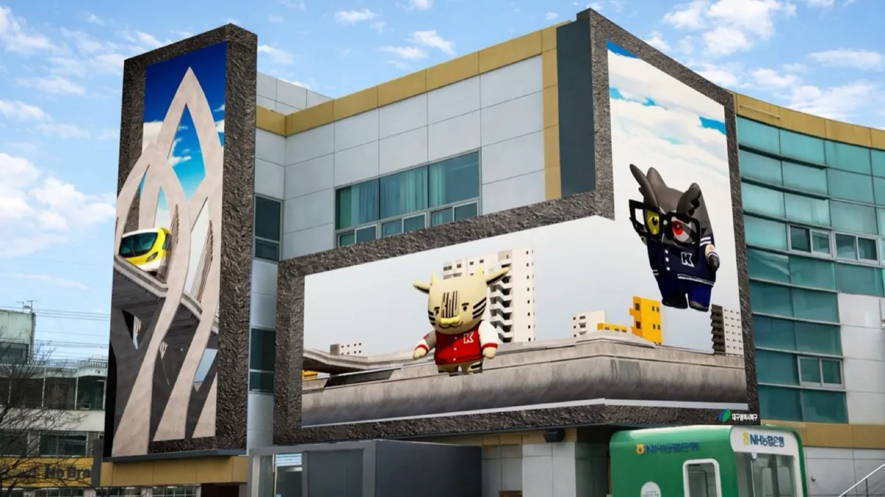
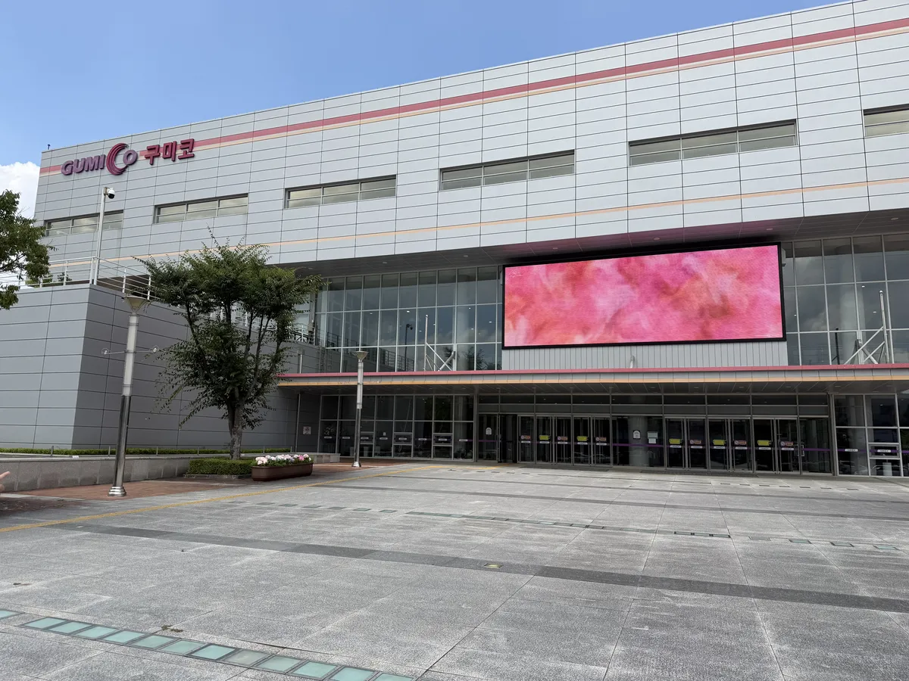
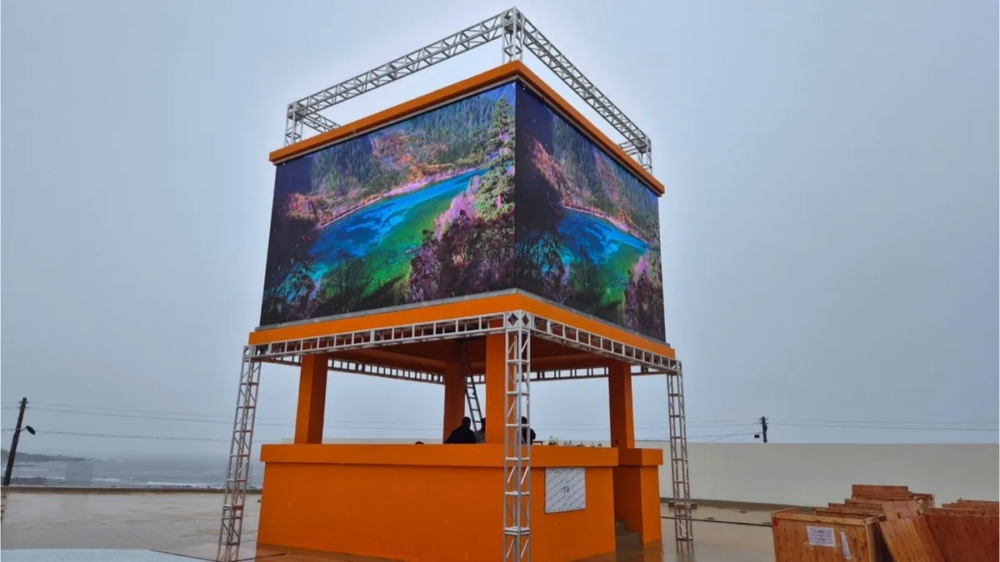

LED 전광판 설치는 어떤 공사인가요?
LED 모듈을 벽면이나 구조물에 고정하고 배선·전원·제어기를 연결해 하나의 화면으로 만드는 공사입니다. 사양 산정, 구조 보강·프레임, 모듈 설치·배선, 제어기 연결·화면 보정 순으로 진행하며, 콘텐츠 제작까지 한 계약입니다.
LED Display · 패널 설치 & 전광판 시공
로비 미디어월·외벽 전광판·세로형 사이니지의 LED 패널 설치를 사양 산정부터 배선까지 직접 하고, 화면에 올릴 미디어아트도 같은 계약으로 만듭니다.
LED 전광판 설치는 LED 모듈을 구조물에 고정하고 배선·전원·제어기를 연결해 한 화면으로 동작하게 만드는 공사입니다.
오늘은 봄날은 대구광역시 수성구에 사업장을 둔 여성기업으로, 대부분의 발주에서 다른 업체로 쪼개지는 시공과 콘텐츠 제작을 한 계약으로 수행합니다.




Types
| 로비 LED 미디어월 | 관공서·기업 로비의 대형 상시 화면. 가까이서 보므로 픽셀 간격이 촘촘해야 합니다. 예: 대구학생문화센터 로비 LED 월. |
|---|---|
| 건물 외벽 LED 전광판 | 멀리서 스쳐 보는 대형 화면. 주간 밝기, 옥외 방수·방진, 구조 보강이 관건입니다. 예: 구미코 외벽 LED. |
| 세로형 LED 사이니지 | 안내 화면을 미디어아트 화면으로 함께 쓰는 세로 화면. 예: 구미코 로비 사이니지. |
| 기존 패널 활용 | 이미 있는 화면의 해상도와 입력 규격에 맞춰 콘텐츠만 제작합니다. 화면을 새로 살 필요가 없습니다. |
Process
화면 크기, 최소 시야 거리, 주변 밝기, 전기 용량, 설치면 하중을 보고 픽셀 피치·밝기·전력 용량을 정합니다.
하중을 받을 구조를 보강하고 프레임을 시공합니다. 옥외는 방수·방진과 배수 경로도 봅니다.
모듈을 달고 배선·전원 계통을 연결한 뒤, 제어기·플레이어를 붙여 화면을 보정합니다.
규격에 맞춘 미디어아트를 올리고 계절·행사마다 교체합니다. 이상은 원격으로 조치합니다.
On Site
상설 LED와 옥외 LED에 미디어아트를 걸어 운영 중인 현장입니다.



FAQ
LED 모듈을 벽면이나 구조물에 고정하고 배선·전원·제어기를 연결해 하나의 화면으로 만드는 공사입니다. 사양 산정, 구조 보강·프레임, 모듈 설치·배선, 제어기 연결·화면 보정 순으로 진행하며, 콘텐츠 제작까지 한 계약입니다.
보는 거리와 화면 크기가 사양을 결정합니다. 가까이서 보는 로비 미디어월은 픽셀 간격이 촘촘해야 하고, 멀리서 보는 외벽 전광판은 덜 촘촘해도 됩니다. 실측 결과로 픽셀 피치·밝기·전력 용량을 산정해 견적서에 반영합니다.
가능합니다. 기존 LED 패널·미디어월·정보게시대의 해상도와 입력 규격에 맞춰 미디어아트를 만들므로 화면을 새로 살 필요가 없습니다. HDMI 입력 화면이면 플레이어만 연결하면 되고, 재생 장비는 실측 때 확인합니다.
오늘은 봄날은 대구광역시 수성구의 여성기업입니다. 대구·경상북도를 우선으로 부산광역시·경상남도·울산광역시까지 시공하고, 대구 안에서는 실측·설치·사후 대응을 당일 처리할 수 있습니다. 공공기관 우선구매 대상이며 직접생산확인증명서로 중소기업자간 경쟁입찰에도 참여합니다.
설치와 콘텐츠 제작이 한 계약입니다. 미디어아트를 코드로 만들어 화면 해상도·비율 그대로 출력하고, 계절·행사마다 교체합니다. 시안 3종은 요청 후 1주일 이내에 나옵니다.
상영 스케줄 관리와 이상 발생 시 원격 조치가 계약에 포함됩니다. 원격으로 해결되지 않으면 현장에서 대응합니다.
여기에 없는 내용은 010-4292-1999 또는 studio@publicbloom.art으로 문의해주세요. 접수 후 24시간 이내에 연락드립니다.
설치 장소, 벽면·화면 크기, 일정을 알려주시면 실측 후 회계연도 기준 견적서와 여성기업 확인서·직접생산확인증명서를 보내드립니다.